Valk
Valk is one of the members of Flipside, a well known Idol group he does alongside his brother, Dom. Valk is one of Firebrand's grandchildren, and his original name is Microphone! Valk's parents are also divorced.

Below is art made by Sodakettle of Valk.
Dom
Dom is one of the members of Flipside, a well known Idol group he does alongside his brother, Valk. Dom is also one of Firebrand's grandchildren, and Dom's original name is Megaphone! Their parents are also divorced. It is also common for Dom to wear binders, and they have a missing wing and eye.

Below is art made by Sodakettle of Dom.
Zuka
Zuka is the NPC who lets you into the Phights of the game, where the PVP aspect of the game is.
Not only does Zuka take you to the Phights, he also runs the cosmetics shop in Crossroads. Zuka was originally a Blackrock soldier, now retired and missing one of his arms. Zuka is also the adoptive father of the Phighter known as Rocket. Zuka is also shown to have connections to Darkheart, possibly back when he was a soldier, and has connections to the Broker in Death In The Family.
Below is art made by Sodakettle of Zuka.


Ghostdeeri
Ghostdeeri is a watcher, being one of seven. Watchers are constructs made by Ghostwalker, meant to watch the Inpherno and document what happens. Due to this, Ghostdeeri has lived her entire life in the Inpherno and despite being a different species is used to coexisting with Inphernals. Ghostdeeri is tasked by Ghostwalker to watch Crossroads, so Ghostdeeri owns a library that holds just about all known knowledge of the Inpherno. This library holds various bindings and books that Ghostdeeri writes herself. She even writes stories about Traffic's travels for her library. Ghostdeeri has a photographic memory, able to remember specific events down to the exact second. Even though she believes she's not to meddle in the affairs of mortals, Ghostdeeri is a friend of Traffic and Lightblox, expressing genuine concern for them. With Traffic, Ghostdeeri lets him sleep in her library and gets worried when Traffic travels because he lives for long periods of time. Ghostdeeri with Lightblox acts like a godmother to Lightblox and takes care of her.

Below is art made by Phighting's official artists of Ghostdeeri.
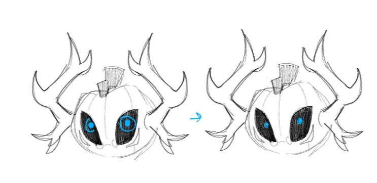
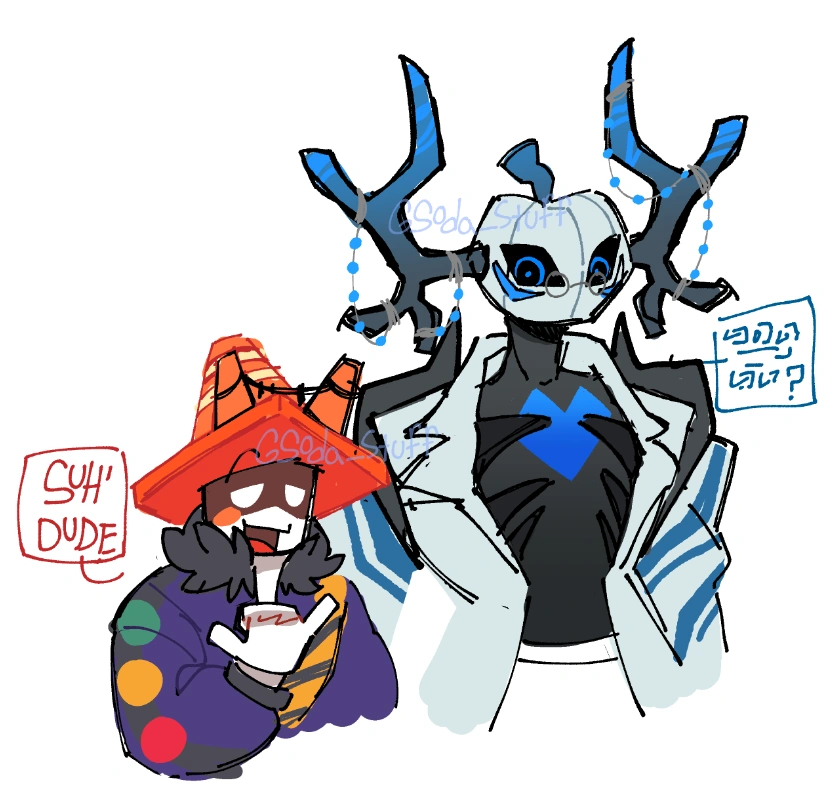
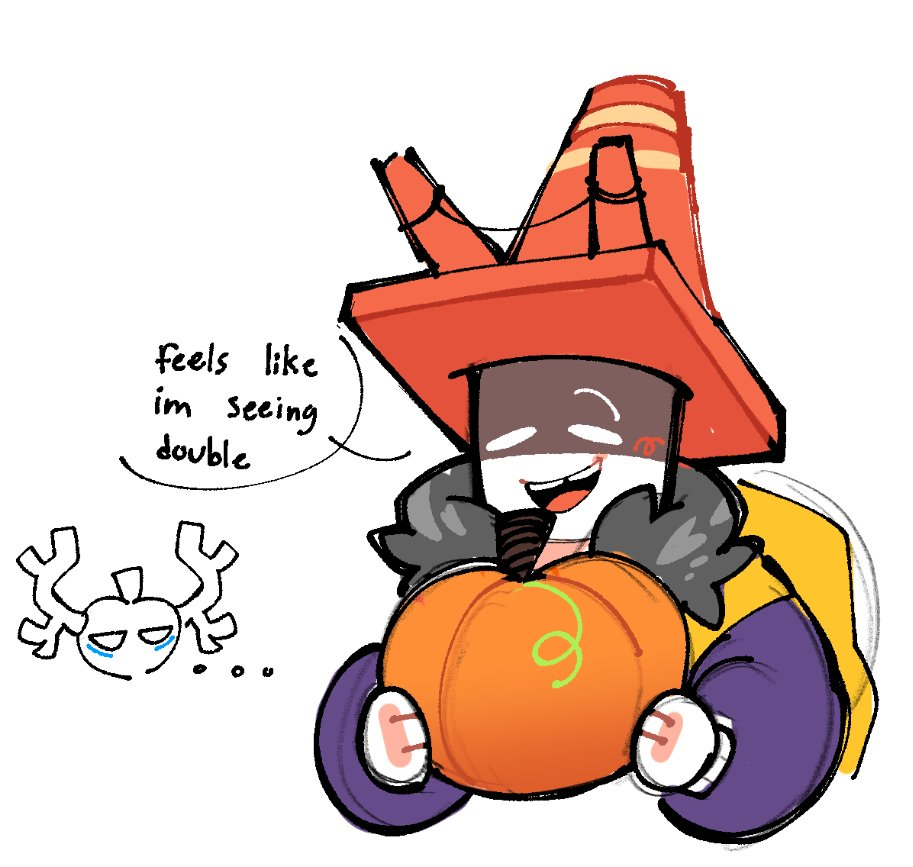
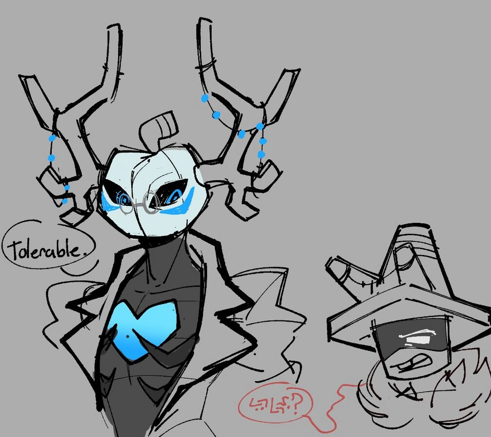
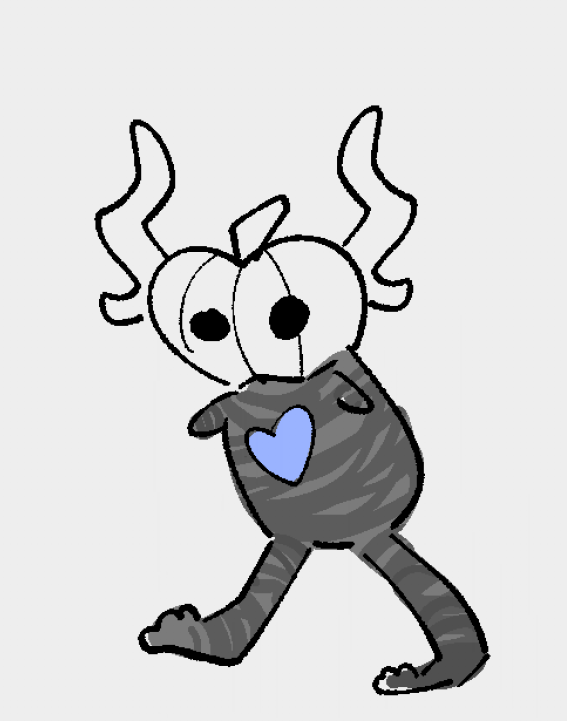
Traffic
Traffic enjoys traveling, he's gone to every region and usually travels through hitchhiking, he tends to stay for about a week before leaving. Traffic has relationships with Lightblox, seeing her as a little sister, and Ghostdeeri being a close friend of his. Sometimes, Ghostdeeri lets Traffic stay in her library to sleep. Mx Bot likes messing with Traffic, making Traffic a victim to their schemes. They never really do any serious harm though. Pwnatious has a very one sided rivalry with Traffic, heavily disliking him. According to Pwnatious, Traffic is "too high to figure out."

Below is art made by Phighting's official artists of Traffic.
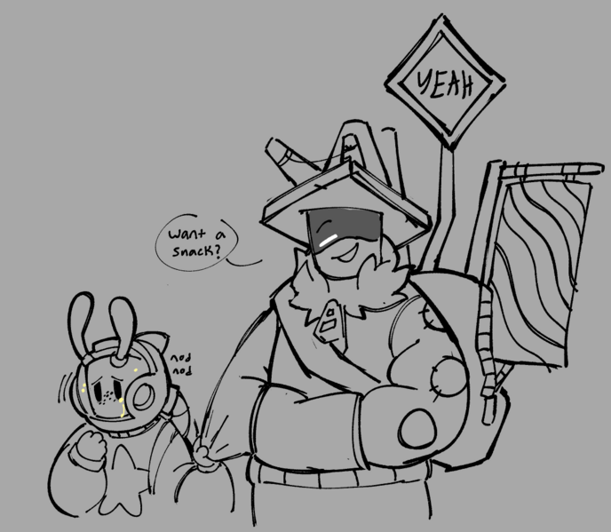
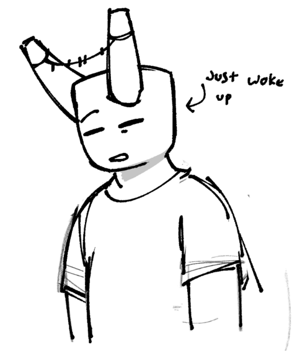
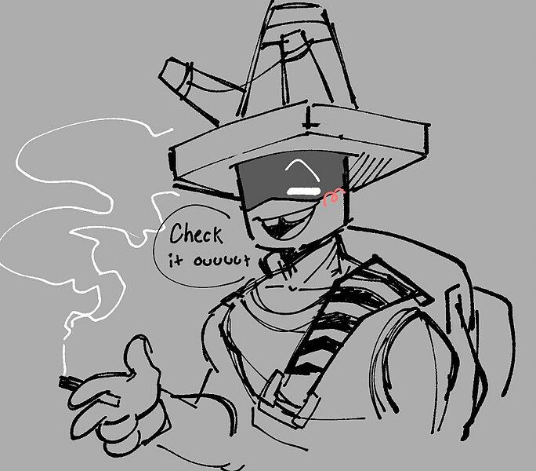
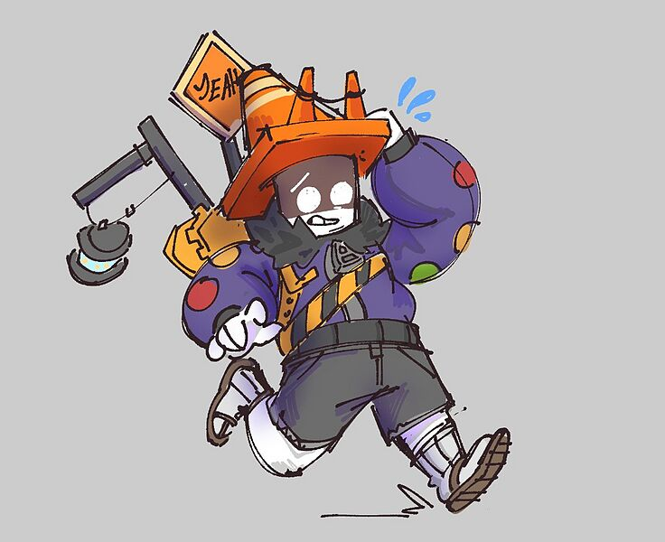
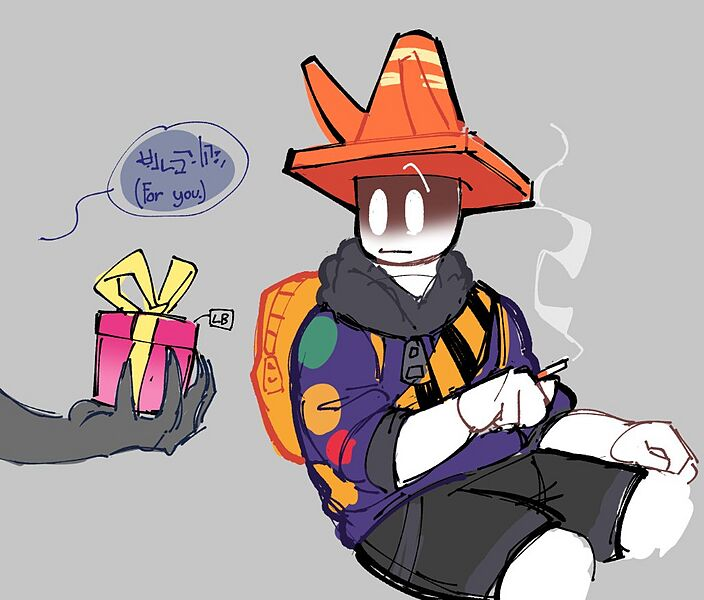
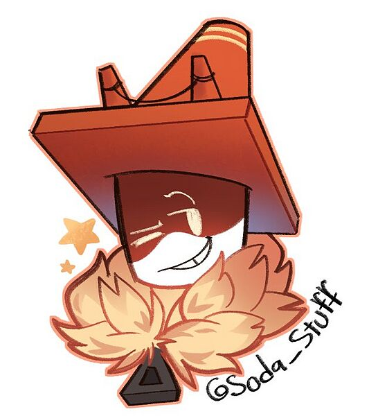
Roger
Roger is in the Lobby, and they are essentially a punching bag for everyone to use.
There is another punching bag dummy known as Rojer.
Self-Aware Civilian
The Self-Aware Civilian can be found in Crossroads as one of the many NPCs that roams in the center. They're more of a joke NPC.
Paint Bucket

Broker Doll
Broker Dolls are more like joke NPCs, looking very similar to the Makeship Broker plushie. During different events, they usually decorate the lobby and their dialog typically involves something happening around them.
Graffiti

Medkit Doll
The Medkit Doll is the same as the Broker Doll, instead advertising the Medkit Plushie and it can have different dialogs each update.
Mx. Bot

Pwnatious "Moneybags" The III
Pwnatious was born into a noble family in Blackrock, with their parents usually being absent in childhood. Pwnatious's parents still don't really pay attention to them in adulthood, so Carnage usually takes care of them. When they were younger, they were taken care of by a nanny.
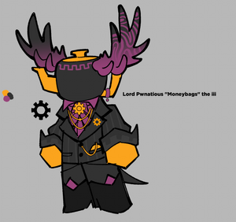
Below is art made by Phighting's official artists of Pwnatious "Moneybags" The III.
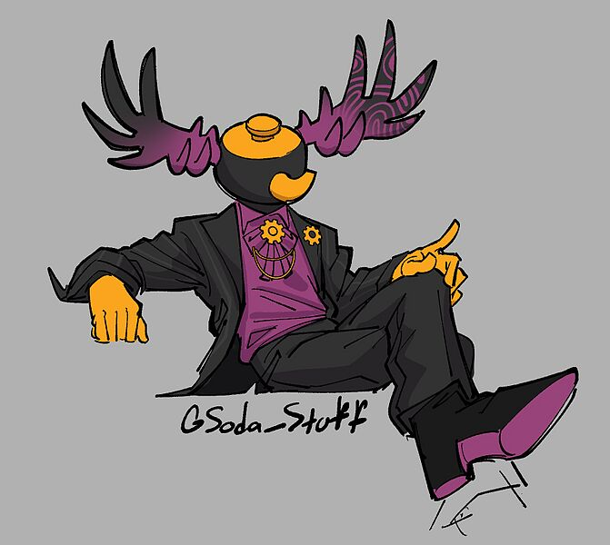
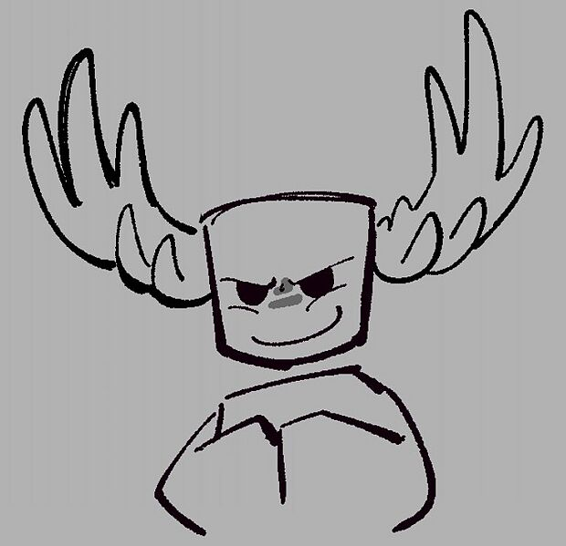
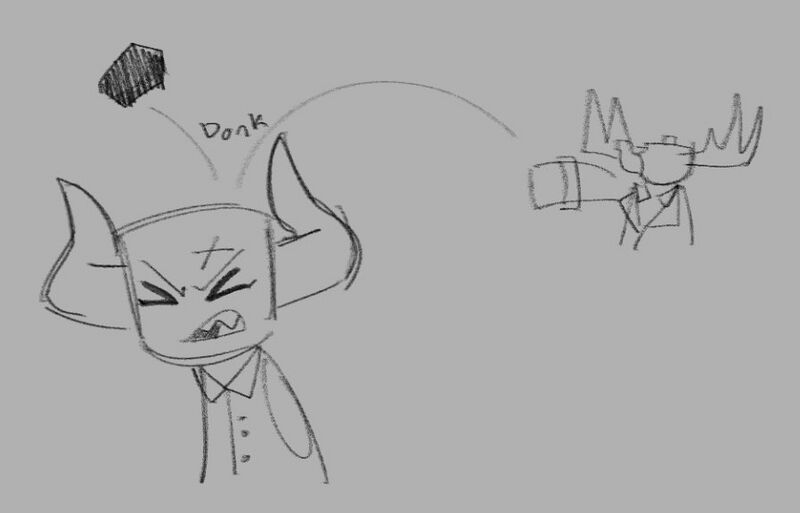
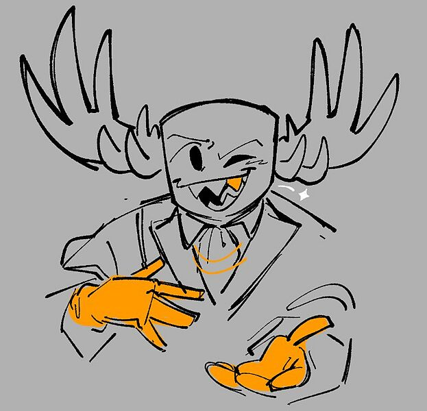

Rainbeau
Rainbeau naturally spawned in Playground, but they later moved into Crossroads. Rainbeau became a well-known delivery inphernal, using their gear to deliver packages and letters all across the city with the help of their rainbow scarf. Rainbeau is known to be rather quick with their work and paid well for their job. Rainbeau is able to deliver to any layer of Crossroads in under 20 minutes, usually depending on their day. Rainbeau is unable to really stay in any layer of Crossroads due to their work. Rainbeau is close to Paint Bucket and Spray Paint, their found family and siblings. Though, sometimes at night, Rainbeau follows an unknown green vigilante who is found roaming the city.

Settoing
Settoing is an NPC that opens up your settings when you interact with them in Crossroads and the Lobby.
Sparkles
Not much is known about Sparkles at the moment, but we do know she performs in a circus with a troupe.

Spray Paint
Spray Paint and Graffiti are the NPCs that are responsible for all the graffiti in Crossroads. They are rivals with each other. Spray Paint is also the non-biological sibling of Rainbeau and Paint Bucket! Though, Mx. Bot sometimes brings him as an unwilling sidekick.

Below is art made by Phighting's official artists of Spray Paint.
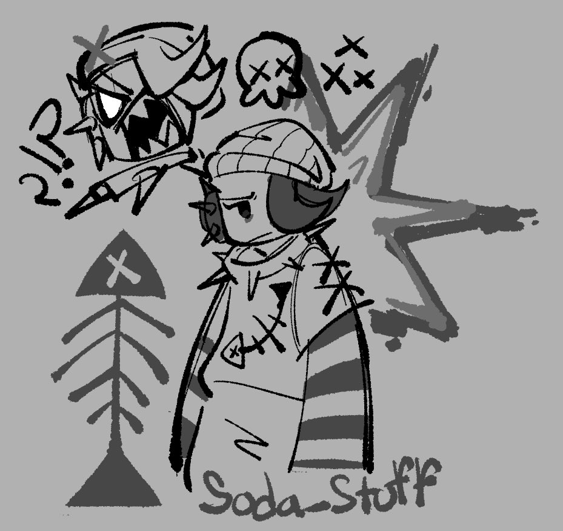
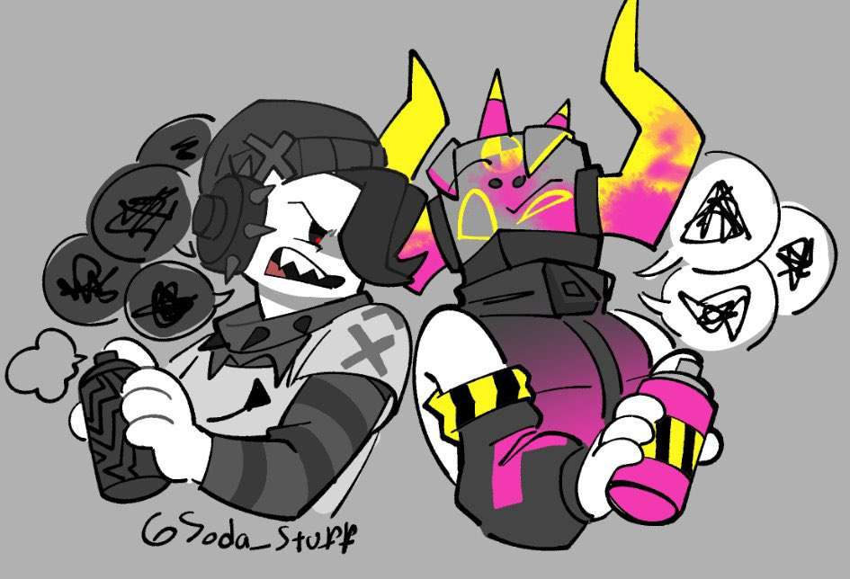
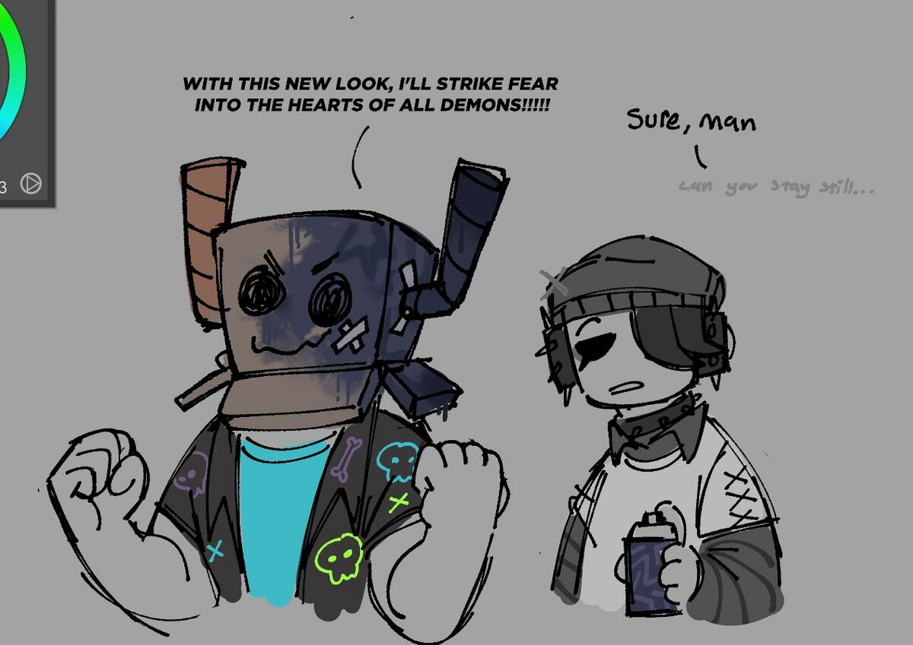
The Dollmaker
The Dollmaker naturally spawned within Lost Temple, and true to her name, she's a doll maker. Her gear is 3 dollars that follow her, and there's a set of needles in her spine. The Dollmaker does have some unique abilities, such as being able to sense events and bad omens before they occur. When she feels she's recieved a vision, usually the Dollmaker feels compelled to make a doll in the image of whoever could be associated in it. Based on the event is the needle the Dollmaker uses in crafting the doll. The first needle is good visions, the second is bad omens, and death with the third and final needle. During the Scorch, 10 years prior to Phighting's game, the Dollmaker was caught in it. While trying to flee, she fled into water, unaware it was boiling. The Dollmaker became scarred across her body and the event left her mute. The Dollmaker can still communicate through the help of her three dolls, who are named Fury, Folly, and Tragedy, they all speak for her. Each doll is controlled by the Dollmaker, and only one at a time can speak. The Dollmaker can still eat and drink with some help. After a certain amount of time, the Dollmaker joined the Church of The True Eye, becoming highly prized by Father Overseer for her oracle capabilities. Past the visions, the Dollmaker regularly creates dolls for inphernals and the newspawns of the Chuch.

Below is art made by Phighting's official artists of Dollmaker.
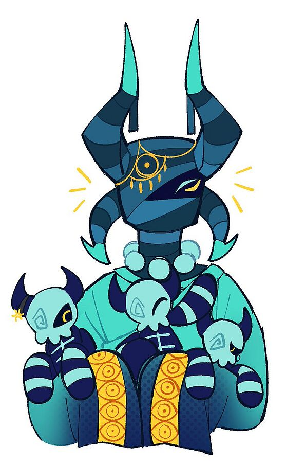
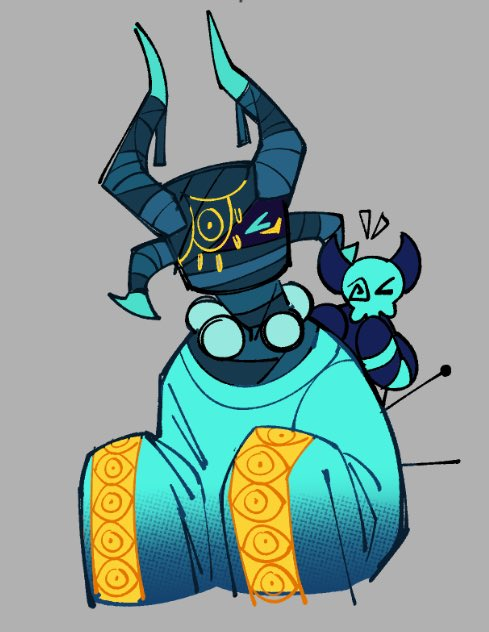
Void Star

Doomsekkar
As of right now, before the Crossroads Must Fall update, Doomsekkar is the only bossfight in the game that is PVE. They are the only PVE feature. To find Doomsekkar, in Crossroads players can go to the library and find a book they can interact with. After interacting with the book, the players will find themselves forced to play Vinestaff against Doomsekkar in an arena. Upon defeating Doomsekkar, the players unlock a new skin for Vinestaff known as Thornstaff.